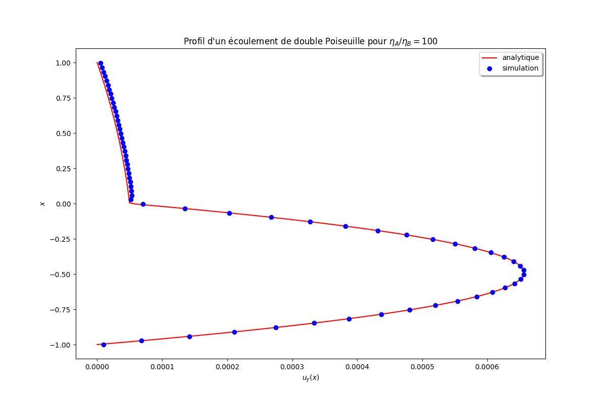

Implementation of a Navier-Stokes/Cahn-Hilliard model
Objective of this 5th tutorial
The objective is to implement in LBM_Saclay, the Navier-Stokes/Cahn-Hilliard model. The starting point is the kernel CH implemented in the first tutorial. It will be extended here with the Navier-Stokes (NS) equations and renamed NSCH.
Mathematical model & LBM scheme
The model summarized in Summary of Navier-Stokes/phase-field model composed of incompressible Navier-Stokes equations Eqs. (503) - (507) coupled with a Cahn-Hilliard equation Eq. (508). Two forces appear in that model: 1) the capillary force defined by Eq. (500) \(\boldsymbol{F}_c=\mu_{\phi}\boldsymbol{\nabla}\phi\) and 2) the gravity force defined by \(\boldsymbol{F}_g=\varrho\boldsymbol{g}\).
The equilibrium distribution function for incompressible Navier-Stokes is the version 2 presented in LBM scheme for incompressble NS. The scheme works on a dimensionless pressure \(p^{\star}_h\). It needs to add a viscous force \(\boldsymbol{F}_v\) (Eq. (210)) and a pressure force \(\boldsymbol{F}_p\) (Eq. (209)) to be consistent with the continuous model.
Expression of viscous force in LBM
LBM formulation of \(\boldsymbol{F}_v\)
(264)\[\boldsymbol{F}_{v}=-\frac{\nu}{c_{s}^{2}\delta t}\sum_{i}\boldsymbol{c}_{i}(\boldsymbol{c}_{i}\cdot\boldsymbol{\nabla}\varrho)f_{i}^{\star}\]where
(265)\[f_{i}^{\star}=(\boldsymbol{M}^{-1}\boldsymbol{S}\boldsymbol{M}(\boldsymbol{f}-\boldsymbol{f}^{eq}))_{i}\]For each component
\[\begin{split}F_{v,x}=-\frac{\nu}{c_{s}^{2}\delta t}\sum_{i=0}^{N_{pop}}c_{ix}\left[c_{ix}(\partial_{x}\varrho)+c_{iy}(\partial_{y}\varrho)+c_{iz}(\partial_{z}\varrho)\right]f_{i}^{\star}\\ F_{v,y}=-\frac{\nu}{c_{s}^{2}\delta t}\sum_{i=0}^{N_{pop}}c_{iy}\left[c_{ix}(\partial_{x}\varrho)+c_{iy}(\partial_{y}\varrho)+c_{iz}(\partial_{z}\varrho)\right]f_{i}^{\star}\\ F_{v,z}=-\frac{\nu}{c_{s}^{2}\delta t}\sum_{i=0}^{N_{pop}}c_{iz}\left[c_{ix}(\partial_{x}\varrho)+c_{iy}(\partial_{y}\varrho)+c_{iz}(\partial_{z}\varrho)\right]f_{i}^{\star}\end{split}\]
Objective
In this tutorial, we will see how to
add a new equation (like tuto 2)
add a
setup_colliderfunction relative to NS equationsadd external force terms \(\boldsymbol{F}_c\) and \(\boldsymbol{F}_g\)
add force terms \(\boldsymbol{F}_v\) and \(\boldsymbol{F}_p\) for consistency
1. Create a new kernel NSCH
Create a new kernel NSCH
You can refer to Tuto 1 & 2 where all commands have been presented in detail:
Copy your kernel
CHand rename itNSCH_Tutorialin directoryLBM_Saclay_Rech-Dev/src/kernels/Go to your new folder
NSCH_Tutorialand replace all files with extension_CHby_NSCHEdit your files and replace
_CHwith_NSCHIn file
Setup.hreplace the problem nameCHbyNSCHCreate your
Makefilewith option-DPROBLEM=NSCH_Tutorialand compile
2. Add a new equation in your kernel NSCH
The mathematical model is currently composed of one Cahn-Hilliard equation. It is necessary to add one supplementary equation.
Problem
The number of equation is currently 1
Base::nbEqs = 1; const int isize = params.isize; const int jsize = params.jsize; const int ksize = params.ksize;
Modify it for two equations
Solution
Base::nbEqs = 2;
Function init_f()
The initialization is currently performed only for one equation:
if (params.collisionType1 == BGK) { init1eq<EquationTag1, BGKCollider<dim, npop>>(); } else if (params.collisionType1 == MRT) { init1eq<EquationTag1, MRTCollider<dim, npop>>(); }
Add a new block
if-else ifforEquationTag2
Solution
if (params.collisionType1 == BGK) { init1eq<EquationTag1, BGKCollider<dim, npop>>(); } else if (params.collisionType1 == MRT) { init1eq<EquationTag1, MRTCollider<dim, npop>>(); } if (params.collisionType1 == BGK) { init1eq<EquationTag2, BGKCollider<dim, npop>>(); } else if (params.collisionType1 == MRT) { init1eq<EquationTag2, MRTCollider<dim, npop>>(); }
Function update_f()
The update is also performed only for one equation:
if (params.collisionType1 == BGK) { update1eq<EquationTag1, BGKCollider<dim, npop>>(); } else if (params.collisionType1 == MRT) { update1eq<EquationTag1, MRTCollider<dim, npop>>(); }
Add a new block
if-else ifforEquationTag2
Solution
if (params.collisionType1 == BGK) { update1eq<EquationTag1, BGKCollider<dim, npop>>(); } else if (params.collisionType1 == MRT) { update1eq<EquationTag1, MRTCollider<dim, npop>>(); } if (params.collisionType1 == BGK) { update1eq<EquationTag2, BGKCollider<dim, npop>>(); } else if (params.collisionType1 == MRT) { update1eq<EquationTag2, MRTCollider<dim, npop>>(); }
Function make_boundaries()
The update of bounday conditions is also performed for a single equation
this->bcPerMgr.make_boundaries(scheme.f1, BOUNDARY_EQUATION_1);
Add a new line for
f2andBOUNDARY_EQUATION_2
Solution
this->bcPerMgr.make_boundaries(scheme.f1, BOUNDARY_EQUATION_1); this->bcPerMgr.make_boundaries(scheme.f2, BOUNDARY_EQUATION_2);
Function struct LBMScheme
Add a new tag
tagNSforEquationTag2
Solution
EquationTag1 tagC; EquationTag2 tagNS;
Add two empty functions called
setup_colliderforEquationTag2with respectively BGK and MRT collisions
Solution
KOKKOS_INLINE_FUNCTION void setup_collider(EquationTag2 tag, const IVect<dim>& IJK, BGK_Collider& collider) const { } KOKKOS_INLINE_FUNCTION void setup_collider(EquationTag2 tag, const IVect<dim>& IJK, MRT_Collider& collider) const { }Remark
Those two functions are empty (but declared). The second one will be filled below.
Function make_boundary
The boundary conditions are applied only for Cahn-Hilliard equation
// phi boundary if (Base::params.boundary_types[BOUNDARY_EQUATION_1][faceId] == BC_ANTI_BOUNCE_BACK) { real_t boundary_value = Base::params.boundary_values[BOUNDARY_CONCENTRATION][faceId]; for (int ipop = 0; ipop < npop; ++ipop) this->compute_boundary_antibounceback(tagC, faceId, IJK, ipop, boundary_value); } else if (Base::params.boundary_types[BOUNDARY_EQUATION_1][faceId] == BC_ZERO_FLUX) { for (int ipop = 0; ipop < npop; ++ipop) this->compute_boundary_bounceback(tagNS, faceId, IJK, ipop, 0.0); }
Add a new block
if-else ifforBOUNDARY_EQUATION_2andtagNSwith keywordBOUNDARY_PRESSURE
Solution
if (Base::params.boundary_types[BOUNDARY_EQUATION_2][faceId] == BC_ANTI_BOUNCE_BACK) { real_t boundary_value = this->params.boundary_values[BOUNDARY_PRESSURE][faceId]; for (int ipop = 0; ipop < npop; ++ipop) { this->compute_boundary_antibounceback(tagNS, faceId, IJK, ipop, boundary_value); } } else if (Base::params.boundary_types[BOUNDARY_EQUATION_2][faceId] == BC_ZERO_FLUX) { for (int ipop = 0; ipop < npop; ++ipop) this->compute_boundary_bounceback(tagNS, faceId, IJK, ipop, 0.0); } }
3. Modifications inside each file of NSCH
Declaration of new fields
In enum ComponentIndex, only the indices relative to Cahn-Hilliard model are declared:
enum ComponentIndex { IU , /*!< X velocity / momentum index */ IV , /*!< Y velocity / momentum index */ IW , /*!< Z velocity / momentum index */ IC , /*!< Phase field index */ IMU , /*!< Chemical potential */ ILAPLAC, /*!< Laplacien of Phase field */ COMPONENT_SIZE /*!< invalid index, just counting number of fields */ };
Complete the list with hydrodynamics indices density \(\varrho\), hydrodynamic pressure \(p_h\), gradient \(\boldsymbol{\nabla}\phi\), gradient \(\boldsymbol{\nabla}\varrho\) and total force \(\boldsymbol{F}_{tot}\).
Solution
enum ComponentIndex { IU , /*!< X velocity / momentum index */ IV , /*!< Y velocity / momentum index */ IW , /*!< Z velocity / momentum index */ IPHI , /*!< Phase field index */ IMU , /*!< Chemical potential */ ILAPLAC, /*!< Laplacien of Phase field */ ID, IP, IDPHIDX, IDPHIDY, IDPHIDZ, IDRHODX, IDRHODY, IDRHODZ, IFX, /*!< Force Navier Stokes X */ IFY, /*!< Force Navier Stokes Y */ IFZ, /*!< Force Navier Stokes Z */ COMPONENT_SIZE /*!< invalid index, just counting number of fields */ };
Add new outputs
In struct index2names only the strings for Cahn-Hilliard model are written:
map[IC ] = "comp"; map[IU ] = "vx"; map[IV ] = "vy"; map[IW ] = "vz"; map[IMU] = "mu";
Add a new outputs for density and pressure (and more if wanted).
Solution
map[IPHI] = "phi"; map[IU ] = "vx"; map[IV ] = "vy"; map[IW ] = "vz"; map[IMU ] = "mu"; map[ID ] = "rho"; map[IP ] = "pressure";
Search IC and replace by IPHI
In previous file Index_NSCH.h, the index IC has been replaced by IPHI. Don’t forget to find IC in all functions of Models_NSCH.h and replace them by the new index IPHI .
Read and declare Navier-Stokes parameters in ModelParams
The Navier-Stokes equations involve several parameters: the kinematic viscosity \(\nu_1\) of fluid 1 (respectively \(\nu_2\) of fluid 2), the density \(\rho_1\) (\(\rho_2\)). The surface tension \(\sigma\) has already been read as input paramater for Cahn-Hilliard equation. Also read the components of gravity \(\boldsymbol{g}=(g_x,g_y,g_z)\) (gx, gy, gz)
Read and declare the Navier-Stokes parameters in
ModelParams
Solution
Read parameters in input file:
rho0 = configMap.getFloat("params", "rho0", 1.0); rho1 = configMap.getFloat("params", "rho1", 1.0); nu0 = configMap.getFloat("params", "nu0" , 1.0); nu1 = configMap.getFloat("params", "nu1" , 1.0); gx = configMap.getFloat("params", "gx" , 0.0); gy = configMap.getFloat("params", "gy" , 0.0); gz = configMap.getFloat("params", "gz" , 0.0);
Declare them as
real_tat the end ofModelParams
Solution
real_t rho0, rho1, nu0, nu1, gx, gy, gz;
From Tuto 1, three initial conditions are currently implemented
if (initTypeStr == "random") initType = RANDOM_SPINODAL; else if (initTypeStr == "nucleation") initType = RANDOM_NUCLEATION; else if (initTypeStr == "serpentine") initType = SERPENTINE;Add a new
else ifcondition forvertical(see Tuto 2)Solution
if (initTypeStr == "random") initType = RANDOM_SPINODAL; else if (initTypeStr == "nucleation") initType = RANDOM_NUCLEATION; else if (initTypeStr == "serpentine") initType = SERPENTINE; else if (initTypeStr == "vertical") initType = PHASE_FIELD_INIT_VERTICAL;
Add specific functions for Navier-Stokes
Add a new harmonic function
tau_NSfor relaxation rate \(\tau_{NS}\)
Solution
tau_NS// ======================================================= // relaxation coef for LBM scheme // KOKKOS_INLINE_FUNCTION real_t tau_NS(const LBMState &lbmState) const { const real_t phi = lbmState[IPHI]; const real_t nu = nu0 * nu1 / (((1.0 - phi) * nu1) + ((phi)*nu0)); real_t tau = 0.5 + (e2 * nu * dt / SQR(dx)); return (tau); }
Add a new function
interpol_rhofor linear interpolation of density \(\varrho=\rho_1\phi+\rho_2(1-\phi)\)
Solution
interpol_rho// ======================================================= // Interpolation for rho KOKKOS_INLINE_FUNCTION real_t interpol_rho (real_t phi) const { return rho0*phi + rho1*(1.0 - phi); }
Add a new function
force_Pfor pressure force \(\boldsymbol{F}_p=-p_h/\varrho(\phi)\boldsymbol{\nabla}\varrho\)
Solution
force_P// =============================================================================================================== // Pressure term for NS. Correction term because of p* formulation inside the eq dist function // =============================================================================================================== template <int dim> KOKKOS_INLINE_FUNCTION RVect<dim> force_P (const LBMState &lbmState) const { RVect<dim> gradrho; gradrho[IX] = lbmState[IDRHODX]; gradrho[IY] = lbmState[IDRHODY]; if (dim == 3) { gradrho[IZ] = lbmState[IDRHODZ]; } const real_t scal = lbmState[IP] / lbmState[ID]; RVect<dim> term; term[IX] = -scal * gradrho[IX]; term[IY] = -scal * gradrho[IY]; if (dim == 3) { term[IZ] = -scal * gradrho[IZ]; } return term; }
Add a new function
force_Gfor gravity force \(\boldsymbol{F}_g=\varrho\boldsymbol{g}\)
Solution
force_G// =============================================================================================================== // Body term for NS: gravity // template <int dim> KOKKOS_INLINE_FUNCTION RVect<dim> force_G(const LBMState &lbmState) const { RVect<dim> term; term[IX] = gx * lbmState[ID]; term[IY] = gy * lbmState[ID]; if (dim == 3) { term[IZ] = gz * lbmState[ID]; } return term; }
Add a new function
force_TSfor surface tension force \(\mu_{\phi}\boldsymbol{\nabla}\phi\)
Solution
force_TS// =============================================================================================================== // Surface tension liquid/gas for NS // template <int dim> KOKKOS_INLINE_FUNCTION RVect<dim> force_TS(const LBMState &lbmState) const { const real_t tension = sigma * 1.5 / W * (g_prime(lbmState[IPHI]) - SQR(W) * lbmState[ILAPLAC]); RVect<dim> term; term[IX] = tension * lbmState[IDPHIDX]; term[IY] = tension * lbmState[IDPHIDY]; if (dim == 3) { term[IZ] = tension * lbmState[IDPHIDZ]; } return term; }
Function setup_collider with BGK
From stage 2, the function
setup_colliderwithBGK_Collideris currently empty. It must be filled to simulate Navier-Stokes equations.
Solution
KOKKOS_INLINE_FUNCTION void setup_collider(EquationTag2 tag, const IVect<dim> &IJK, BGK_Collider &collider) const { // Paramètres pour la simulation const real_t dx = Model.dx; const real_t dt = Model.dt; const real_t c = dx / dt; const real_t cs2 = SQR(c) / Model.e2; // Stockage des anciennes grandeurs macroscopiques LBMState lbmState; Base::template setupLBMState2<LBMState, COMPONENT_SIZE>(IJK, lbmState); // Calcul du tau de collision collider.tau = Model.tau_NS(lbmState);
Equilibrium distribution function Eq. (202) without variable change
// Equilibrium without force term FState GAMMA; if (dim == 2) { real_t scalUU = SQR(lbmState[IU]) + SQR(lbmState[IV]); for (int ipop = 0; ipop < npop; ++ipop) { real_t scalUC = c * Base::compute_scal(ipop, lbmState[IU], lbmState[IV]); GAMMA[ipop] = scalUC / cs2 + 0.5 * SQR(scalUC) / SQR(cs2) - 0.5 * scalUU / cs2; real_t feqbar = w[ipop] * (lbmState[IP] / (cs2 * lbmState[ID]) + GAMMA[ipop]); collider.feq[ipop] = feqbar; collider.f[ipop] = Base::get_f_val(tag, IJK, ipop); }
Computation of force terms \(\boldsymbol{F}_c\), \(\boldsymbol{F}_g\) and \(\boldsymbol{F}_p\) defined in file
Models_NSCH.h// Computation of force terms defined in models RVect<dim> ForceTS = Model.force_TS<dim>(lbmState); RVect<dim> ForceG = Model.force_G<dim>(lbmState); RVect<dim> ForceP = Model.force_P<dim>(lbmState);
Computation of viscous force \(F_{v,x}\) and \(F_{v,y}\) Eq. (264) & Eq. (265). For BGK collision only one relaxation rate is involved. It appears in factor
coeffV.// Computation of viscous force RVect<dim> ForceV; const real_t nu = Model.nu0 * Model.nu1 / (((1.0 - lbmState[IPHI]) * Model.nu1) + ((lbmState[IPHI]) * Model.nu0)); real_t coeffV = - nu / (cs2 * dt * collider.tau); ForceV[IX] = 0.0; ForceV[IY] = 0.0; for (int alpha = 0; alpha < npop; ++alpha) { ForceV[IX] += E[alpha][IX] * E[alpha][IX] * lbmState[IDRHODX] * (collider.f[alpha] - collider.feq[alpha]) + E[alpha][IX] * E[alpha][IY] * lbmState[IDRHODY] * (collider.f[alpha] - collider.feq[alpha]); ForceV[IY] += E[alpha][IY] * E[alpha][IX] * lbmState[IDRHODX] * (collider.f[alpha] - collider.feq[alpha]) + E[alpha][IY] * E[alpha][IY] * lbmState[IDRHODY] * (collider.f[alpha] - collider.feq[alpha]); } ForceV[IX] = coeffV * ForceV[IX]; ForceV[IY] = coeffV * ForceV[IY];
Computation of total force \(\boldsymbol{F}_{tot}\) and save in array with appropriate indices
IFXandIFY// Calcul et enregistrement du terme source total RVect<dim> ForceTot; ForceTot[IX] = ForceG[IX] + ForceP[IX] + ForceTS[IX] + ForceV[IX]; ForceTot[IY] = ForceG[IY] + ForceP[IY] + ForceTS[IY] + ForceV[IY]; this->set_lbm_val(IJK, IFX, ForceTot[IX]); this->set_lbm_val(IJK, IFY, ForceTot[IY]);
Correction of equilibrium (variable change) with total force term
ForceTot[IX]&ForceTot[IY]// Add force term in equilibrium for (int ipop = 0; ipop < npop; ++ipop) { collider.S0[ipop] = dx * w[ipop] / (lbmState[ID] * cs2) * Base::compute_scal(ipop, ForceTot[IX], ForceTot[IY]); collider.feq[ipop] = collider.feq[ipop] - 0.5 * (collider.S0[ipop]); } } } // end of setup_collider for composition equation
Function init_macro
Write (or copy-paste from tuto 2) an initial condition corresponding to keywords
PHASE_FIELD_INIT_VERTICAL
Solution for vertical separation
else if (Model.initType == PHASE_FIELD_INIT_VERTICAL) { xphi = x - Model.x0; c = Model.phi0(xphi); } real_t rho = Model.interpol_rho(c);
Save in appropriate arrays
Solution
this->set_lbm_val(IJK, IPHI, c ); this->set_lbm_val(IJK, IU , vx ); this->set_lbm_val(IJK, IV , vy ); this->set_lbm_val(IJK, ID , rho);
Function update_macro
Update necessary fields
Solution
The function starts with necessary parameters for computing the coefficient \(c_s^2\)
// get local coordinates real_t x, y; this->get_coordinates(IJK, x, y); const real_t dx = this->params.dx; const real_t dt = this->params.dt; const real_t cs2 = SQR(dx / dt) / Model.e2;Next the moments of distribution functions are computed for \(\phi\), \(p^{\star}\), \(v_x\) and \(v_y\)
// compute moments of distribution equations real_t moment_phi = 0.0; real_t moment_P = 0.0; real_t moment_VX = 0.0; real_t moment_VY = 0.0; for (int ipop = 0; ipop < npop; ++ipop) { moment_phi += Base::get_f_val(tagC, IJK, ipop); moment_P += Base::get_f_val(tagNS, IJK, ipop); moment_VX += Base::get_f_val(tagNS, IJK, ipop) * E[ipop][IX]; moment_VY += Base::get_f_val(tagNS, IJK, ipop) * E[ipop][IY]; } // Update phi const real_t phi = moment_phi;Computation of \(\mu\)
// Update mu LBMState lbmStatePrev; Base::setupLBMState(IJK, lbmStatePrev); const real_t mu = Model.M2(tagC, lbmStatePrev);Computation of \(p_h\) from \(p^{\star}\)
// Update pressure p_h const real_t rho = Model.interpol_rho(phi) ; const real_t P = moment_P * (rho*cs2) ;Computation of \(u_x\) and \(u_y\) from \(v_x\) and \(v_y\) with force term correction \((\delta t/2)\boldsymbol{F}_{tot}/\varrho\)
// Update VX and VY const real_t ForceNSX = lbmStatePrev[IFX]; const real_t ForceNSY = lbmStatePrev[IFY]; real_t VX = moment_VX + 0.5 * dt * ForceNSX / rho; real_t VY = moment_VY + 0.5 * dt * ForceNSY / rho; if (Model.initType == SERPENTINE) { const real_t pi = M_PI; VX = - pi*Model.U0 * cos(pi*((x/Model.L)-0.5)) * sin(pi*((y/Model.L)-0.5)); VY = pi*Model.U0 * sin(pi*((x/Model.L)-0.5)) * cos(pi*((y/Model.L)-0.5)); }Save in array with appropriate indices
// update macro fields this->set_lbm_val(IJK, IPHI , phi); this->set_lbm_val(IJK, ID , rho); this->set_lbm_val(IJK, IP , P ); this->set_lbm_val(IJK, IU , VX ); this->set_lbm_val(IJK, IV , VY ); this->set_lbm_val(IJK, IMU , mu );
Function update_macro_grad
Currently the function contains the laplacian computation for chemical potential.
KOKKOS_INLINE_FUNCTION void update_macro_grad(IVect<dim> IJK) const { real_t laplace_c = Base::compute_laplacian(IJK, IC, BOUNDARY_EQUATION_1); Base::set_lbm_val(IJK, ILAPLAC, laplace_c); }
Add computation of gradients
Solution
KOKKOS_INLINE_FUNCTION void update_macro_grad(IVect<dim> IJK) const { real_t laplace_c = Base::compute_laplacian(IJK, IC, BOUNDARY_EQUATION_1); Base::set_lbm_val(IJK, ILAPLAC, laplace_c); RVect<dim> gradPhi; this->compute_gradient(gradPhi, IJK, IPHI, BOUNDARY_EQUATION_1); this->set_lbm_val(IJK, IDPHIDX, gradPhi[IX]); this->set_lbm_val(IJK, IDPHIDY, gradPhi[IY]); if (dim == 3) this->set_lbm_val(IJK, IDPHIDZ, gradPhi[IZ]); RVect<dim> gradRho; this->compute_gradient(gradRho, IJK, ID, BOUNDARY_EQUATION_2); this->set_lbm_val(IJK, IDRHODX, gradRho[IX]); this->set_lbm_val(IJK, IDRHODY, gradRho[IY]); if (dim == 3) this->set_lbm_val(IJK, IDRHODZ, gradRho[IZ]); }
Add the keywords of initial conditions
In file InitConditionsTypes.h, two keywords are currently declared:
enum InitCondition{ PHASE_FIELD_INIT_UNDEFINED, ADE_GAUSSIAN, RANDOM_SPINODAL, RANDOM_NUCLEATION, SERPENTINE };
Add the new keyword for initial condition
PHASE_FIELD_INIT_VERTICAL
Solution
enum InitCondition{ PHASE_FIELD_INIT_UNDEFINED, ADE_GAUSSIAN, RANDOM_SPINODAL, RANDOM_NUCLEATION, SERPENTINE, PHASE_FIELD_INIT_VERTICAL };
4. Verification of your implementation
The test case of validation is the double-Poiseuille flow. The input file is Test-Tuto04_Double_Poiseuille_BGK.ini in the directory run_training_lbm/Tutorial05_NSCH.
Run and post-process your results
Go to the appropriate folder and run LBM_Saclay
$ cd LBM_Saclay_Rech-Dev/run_training_lbm/Tutorial05_NSCH $ ../../build_NSCH/src/LBM_saclay Test-Tuto04_Double_Poiseuille_BGK.ini
Once the computation is complete, extract from your final
.vtifile one profile \(u_y\) as a function of \(x\) with paraview 5.12
$ path_to_pvpython/pvpython Extract-Profile_BGK_PV512.pvpyThe output is a
.csvfile calledProfil_Double-Poiseuille_BGK.csv.
Compare with the analytical solution written in the python script
Profils_NSCH-BGK_Analytical.py
$ python Profils_NSCH-BGK_Analytical.pyYou must obtain Fig Fig. 49
{kind=link}

Fig. 49 Comparison between LBM and analytical solution of double-Poiseuille flow
Section author: Alain Cartalade